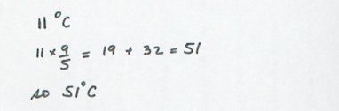

Let's write a program to undo the conversion from Fahrenheit to Celsius we did above. It should convert a temperature measurement in Celsius to one in Fahrenheit.
As before we begin by doing it by hand.
Suppose I want to convert 11 degrees Celsius to its Fahrenheit equivalent. I would write:

Now we need to look at what we have written, and try to view it in terms of the computer operations: input, processing and output operations.
The input operations gather the necessary information. In this case the only information necessary is the value to convert, i.e. 11.
The processing operations are to take the input value, multiply it by 9/5, and add 32.
The output operation is to display the result, i.e. 51.
Translating each of those steps into Python gives us:
temp_in_c = input()
temp_in_f = temp_in_c * 9/5 + 32
print temp_in_fThis is the computational core of our program, but we need to add documentation and an interface. By interface we mean that we need to provide a way for the user to interact with the program. Specifically we need to give the user some initial instructions, and then some meaningful output. Adding a minimal set of instructions and pulling all the pieces together gives us this program.
# c2f.py -- converts a temperature in Celsius to its equivalent in Fahrenheit.
# CPSC 128 Example program
# Tim Topper, Winter 2013
# Input:
print "This program converts temperatures from Celsius to Fahrenheit."
print "Enter a temperature in Celsius (e.g. 10) and press Enter."
temp_in_c = input("Enter temperature in Celsius: ")
# Processing:
temp_in_f = temp_in_c * 9/5 + 32
# Output:
print temp_in_c, "degrees Celsius =", temp_in_f, "degrees Fahrenheit."